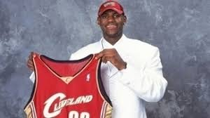

Sobre
Quando se fala nos grandes atletas contemporâneos do basquete, é impossível não passar por LeBron James. Ala do Los Angeles Lakers, o jogador tem uma história de dedicação ao esporte que o fez se tornar uma das maiores estrelas da National Basketball Association (NBA), liga de basquete profissional dos Estados Unidos, e uma inspiração para quem o acompanha dentro e fora das quadras. Com um legado que vai além de estatísticas e títulos, LeBron é uma forte voz na luta por igualdade e justiça social.
História e Carreira
Nascido em 30 de dezembro de 1984, na cidade de Akron, Ohio, nos Estados Unidos, LeBron Raymone James é o único filho de Gloria James. Sua mãe tinha apenas 16 anos quando ele nasceu, e criou o filho sozinha, sem envolvimento do pai. Sua família enfrentava muitos desafios financeiros e foi no basquete que LeBron encontrou uma saída para uma vida melhor: desde muito jovem, já demonstrava habilidades excepcionais no esporte, chamando a atenção de treinadores e olheiros.
Sua carreira no basquete começou a chamar a atenção ainda na escola, quando jogava pela equipe de sua escola, a St. Vincent-St. Mary High School, e levou o time escolar ao título estadual. Seu desempenho atraiu atenção nacional e LeBron foi destaque na capa da revista Sports Illustrated ainda durante o ensino médio. Hoje, ele é reconhecido como um dos maiores atletas do esporte, atrás apenas de Michael Jordan, segundo um ranking dos 75 melhores jogadores de basquete divulgado pela ESPN em 2020.
Primeira escolha para a NBA
Em 2003, LeBron deu o salto para a NBA após ser escolhido como a primeira seleção geral pelo Cleveland Cavaliers, time da cidade de Cleveland, Ohio. Sua entrada no esporte profissional foi marcada por altas expectativas, mas o atleta não decepcionou. Rapidamente, LeBron tornou-se um dos jogadores mais relevantes da liga, conquistando o prêmio de Novato do Ano ainda em sua primeira temporada.
Ao longo dos anos, LeBron James desempenhou um papel determinante em várias equipes da NBA, incluindo o Cleveland Cavaliers (entre 2003 e 2010, e novamente entre 2014 e 2018) e o Miami Heat (2010 a 2014), antes de finalmente se juntar ao Los Angeles Lakers em 2018, time em que joga até hoje na posição de ala. Sua habilidade única de pontuar, passar e defender o tornou uma força a ser reconhecida em todas as partes da quadra.
Ao longo de sua carreira, o jogador acumulou inúmeros prêmios, incluindo quatro títulos da NBA e quatro prêmios de Jogador Mais Valioso (MVP, "Most Valuable Player"). Ele fez parte das equipes olímpicas que representaram o basquete dos Estados Unidos nos jogos de Atenas, em 2004, de Pequim, em 2008, e de Londres, em 2012.
Fora das quadras
Além de suas realizações no esporte, LeBron tem também um impacto significativo fora das quadras. Ele se envolveu em várias iniciativas filantrópicas, incluindo o financiamento de bolsas de estudo para jovens, a construção de escolas e o apoio a diversas causas sociais. A Fundação LeBron James, fundada em 2004 e com sede em sua cidade natal, tem como objetivo melhorar a vida de crianças em situações desfavorecidas, proporcionando oportunidades educacionais e recursos para o desenvolvimento pessoal.
Em 2018, LeBron inaugurou a “I PROMISE School”, também em Akron, Ohio. Destinada a atender crianças em situação de vulnerabilidade, a escola oferece suporte acadêmico, programas extracurriculares, serviços de saúde e suporte para as famílias, buscando criar um ambiente propício para o sucesso educacional e pessoal.
Além de suas atividades filantrópicas, LeBron James também tem sido um defensor vocal da justiça social, expressando suas opiniões sobre questões como igualdade, violência policial e direitos civis. Sua dedicação ao aprimoramento contínuo, tanto no esporte quanto em seus esforços filantrópicos, são um testemunho de sua ética de trabalho incansável e comprometimento com a excelência, dentro e fora das quadras.
Curiosidades
- Altura de Lebron, aos 13 anos já media 1,83m!
- Jogou futebol americano antes do basquete
- Lebron calça impressionantes 48, equivalente ao número 15 americano
- Jogará ao lado de seu filho nesta temporada (2024/2025)
- Lebron é ambidestro, ele usa a mão direita para arremessas e dar a maioria dos dribles, e a esquerda para comer e escrever
- Lebron possui uma parte das ações do Liverpool, time de futebol inglês
- Foi o principal protagonista de Space Jam: Um novo legado
Conquistas
| Nome da conquista | Quantidade de conquistas | Anos da conquista |
|---|---|---|
| MVP | 4 | 2009, 2010, 2012, 2013 |
| NBA champion | 4 | 2012, 2013, 2016, 2020 |
| NBA Finals MVP | 4 | 2012, 2013, 2016, 2020 |
| NBA All-Star | 20 | 2005-2024 |
| NBA All-Star Game MVP | 3 | 2006, 2008, 2018 |
| All-NBA First Team | 13 | 2006, 2008-2018, 2020 |
| All-NBA Second Team | 3 | 2005, 2007, 2021 |
| All-NBA Third Team | 4 | 2019, 2022-2024 |
| NBA ALl-Defensive First Team | 5 | 2009-2013 |
| NBA All-NBA Second Team | 1 | 2014 |
| NBA Rookie of the Year | 1 | 2004 |
| NBA All-Roodie First Team | 1 | 2004 |
| NBA scoring champion | 1 | 2008 |
| NBA assists leader | 1 | 2020 |
| NBA 75th Anniversary Team | ||
| AP Male Athlete of the Decade | 1 | 2010s |
| AP Male Athlete of the Year | 4 | 2013, 2016, 2018, 2020 |
| Sports Illustrated Sportsperson of the Year | 3 | 2012, 2016, 2020 |
| USA Basketball Male Athlete of the Year | 1 | 2012 |
| National high school player of the year | 2 | 2002, 2003 |
| McDonald's All-American Game MVP | 1 | 2003 |
| First-team Parade All-American | 2 | 2002, 2003 |
| Second-team Parade All-American | 1 | 2003 |
| Ohio Mr. Basketball | 3 | 2001-2003 |
| Medalhas nos jogos olimpicos e campeonatos da FIBA | ||
|---|---|---|
| Ano | Local | Tipo de medalha |
| 2004 | Atenas | Bronze (Olympic Games) |
| 2006 | Japão | Bronze (Fiba World Championship) |
| 2007 | Las Vegas | Ouro (FIBA Americas Championship) |
| 2008 | Beijing | Ouro (Olympic Games) |
| 2012 | Londres | Ouro (Olympic Games) |
Números e recordes
Médias da temporada regular
| Tipo | Médias |
|---|---|
| Pontos | 27,1 |
| Assistências | 7,4 |
| Rebotes | 7,5 |
| Turnovers | 3,5 |
| Blocks | 0,7 |
| Steals | 1,5 |
Médias da pós temporada
| Tipo | Médias |
|---|---|
| Pontos | 28,4 |
| Assistências | 7,2 |
| Rebotes | 9,0 |
| Turnovers | 3,6 |
| Blocks | 1,0 |
| Steals | 1,7 |
Recordes
- Maior cestinha de todos os tempos
- Top 5 no double-double
- MVP das Finais com 3 times diferentes
- 30k-10k-10k (O único jogador da NBA a fazer 30 mil pontos, 10 mil rebotes e 10 mil assistências)
- Recorde de All-Star Games
- Mil pontos em 20 temporadas
- Mais jogos e vitórias em playoffs
- 40 pontos contra todos os times da NBA
Minha opinião
Gostaria de reservar esse paragráfo apenas para expressar minha opinião e o por que escolhi ele.
Acho o Lebron um jogador acima da média, junto com Giannis foram os jogadores que me fizeram amar o basquete juntamente com o futebol. Um atleta único, que está a duas décadas entre os melhores da liga, me fez torcer para o Los Angeles Lakers, e o mais longevo de todos os esportes. Apenas apreciar os últimos anos dessa lenda única.